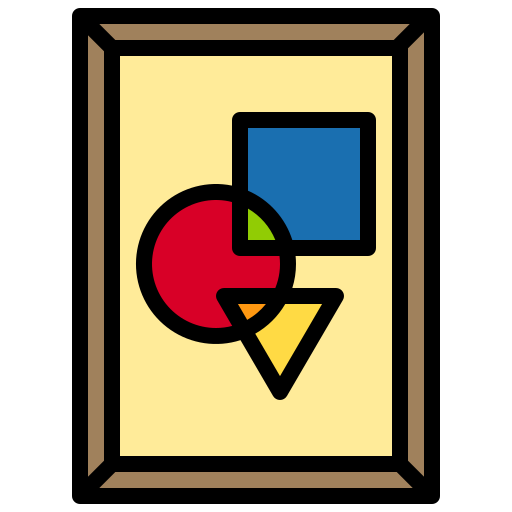

In one form or another, poetry has been around for thousands of years.
Can NLP-based sentiment analysis provide insights to poetry?
A Brief History of Poetry
The first instance of Poetry appeared as early as the 20th century B.C.
The Epic of Gilgamesh often is cited as one of the earliest works of epic poetry.
Petrarca, for whom the Petrarchan sonnet is named, is perhaps one of the most famous early writers of the sonnet.
It became best known as an English poetic form through the work of William Shakespeare
Following the reign of Queen Elizabeth I, the English Restoration period (from 1660-1689) saw the rise of literary elites, such as John Dryden.
In the Romantics and 19th-Century Poetry, some important poets to consider include key Romantic poets such as William Blake, Samuel Taylor Coleridge, William Wordsworth, and John Keats.

Toward the turn of the 20th century as Whitman continued to revise his 1855 edition of Leaves of Grass, he wrote, “Of Modern Man I Sing,” ushering in a new period—and a variety of forms—for poetry.
The 20th century also witnessed a number of poets winning the Nobel Prize, from the United States to India.
.png) Petrarca, for whom the Petrarchan sonnet is named, is perhaps one of the most famous early writers of the sonnet.
Petrarca, for whom the Petrarchan sonnet is named, is perhaps one of the most famous early writers of the sonnet.